Final Project
Abstract
As people, it is important to understand the different resources we have access to in order to better inform ourselves if we come across any issues that relate to health-related problems. Specifically, being knowledgeable on different insurance types is important because it helps you understand which hospital takes what insurance as well as which one is more affordable based on health needs. Different insurance types have different benefits that can help cover the cost of different treatments, medications, and other services that can help promote and mitigate issues. Specifically, insurance helps minimize the amount a patient has to pay out of pocket and gives patients a sense of ease that it is covered. As mentioned before, with access to insurance, it allows patients to have access to doctors that can help with diagnosing any conditions while providing a path forward. With accessibility to insurance, it also encourages a healthier lifestyle as it does not provide any monetary limitations to patients.
Introduction
As mentioned before there are many different benefits to learning about Health Care and Insurance as it promotes the overall well-being of individuals. To best support our research questions, we have decided to use different statistical models to answer our research questions below:
Research Questions
- How does patient information like length of stay, age, gender, medical conditions and admission type impact medical billing amounts?
- How hospital stays (length of stay and medical condition) in different hospitals influence billing amounts for patients?
- How are blood types related to certain medical conditions?
Our goal is to understand the influence of length of stay, age, gender, medical conditions and admission type on the billing amount. In addition, we want to understand how different hospitals influence billing amounts, for patients with similar medical conditions and stay lengths and identify whether hospitals with similar services charge differently. Lastly, for our last research question, it’s important to be aware of which blood type is more common with certain blood types.
Dataset
The Healthcare Dataset highlights information relating to patient information and insurance information of patients. For example, it lists the age, gender, medical condition, blood type, and other factors of different patients. Variables that affect insurance include the type of insurance, billing amount, hospital, length of stay, discharge date, and type of admission. All of the variables are important to consider as it affects pricing, and it gives you the opportunity to explore different types of variables and the relationships between them. Lastly, it gives an insight into how hospitals take different insurance providers and the pricing of it.
Research Questions Analysis and Interpretations
Patient Information Affecting Billing Amount
To start we will dive deeper into understanding how different variables of patient information affect the billing amount. We will use LASSO Regression Model to identify and quantify the impact of patient information like age, gender, medical conditions, length of stay, and admission type on medical billing amounts. This method helps to select the most influential variables and reduce overfitting through regularization.
To answer our first research question, the packages that need to be installed are the dplyr, caret, and glmnet packages. This will be used to execute a LASSO Regression Model. When executing code in R-Studio Cloud, the dplyr package will be commonly used since it is used for data manipulation. Specifically, there are distinct functions that make it easier to analyze and interpret data and it is part of the tidyverse package. The caret package helps with evaluating and training machine learning models. Some distinctive features that can be executed with this package include data splitting, pre-processing, model training, hyperparameter tuning, model evaluation, cross validation, and lastly model comparison. The glmnet package is used for fitting different regression models like LASSO and Ridge Regression. In addition, it also allows you to the the elastic net function, regularization path, and fitting generliazed linear models.
Process
To dive deeper, we will go over the process of how we used LASSO Regression to answer our research question. After importing the packages mentioned above, we will remove the following variables “Date_of_Admission”, “Discharge_Date”, “Hospital”, “Insurance_Provider”, and “Name”. These variables were removed because they are insignificant to this dataset and this new dataset will be stored into a new variable. We will take the significnat variables and from there convert the categorical variables into factor variables since R-Studio does not know that it is classified as categorical data. After converting the variables to factor variables, we will create a matrix that will convert the categorical variables into a numerical matrix format.
After the conversion of variables, the next step is to create dummy variables and transform the data to dummy variables. From there, we will combine these dummy variables with the Billing_Amount. Using the dummy variables that have been combined with Billing_Amount we will split the data into predictors (x) and the response variable (y) which is the Billing_Amount.
We will fit a LASSO Regression model using this information and calculate the best lambda value then extract those coefficients. We will take the best lambda value, fit the final LASSO Model, and display the coefficients. These coefficients show the important columns that will be used in the prediction model. The non-zero coefficients will also be extracted and displayed. Using the final LASSO Regression Model we constructed using the best lambda value, we will predict the values and calculate the residuals. Lastly, we will calculate the Mean Squared Error (MSE), Total Sum of Squares (TSS), Residual Sum of Squares (RSS), and R-Squared value.
Interpretations
Showing All Lambda Values
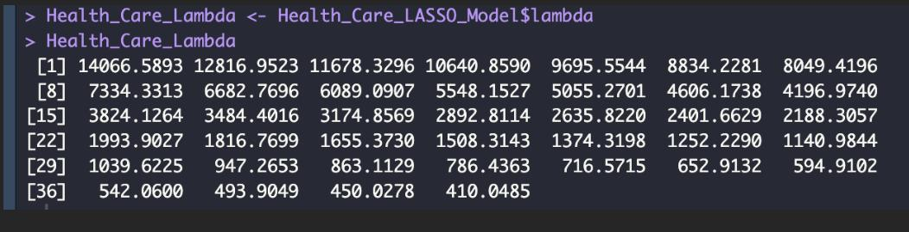
Above the lambda values are shown. For higher lambda values, the coefficients of less important variables towards zero meaning it’s a simpler model with fewer predictors. It also applies a strong penalty which means there are more coefficients shrinking to zero and the data may be underfit if important predictors are removed. Lower lambda values mean that allows more predictors to have more non-zero coefficients making the model more complex. This means a weak penalty is applied, meaning there are more predictors remaining in the model, making it more complex. This can overfit the data if it becomes too flexible.
Fitting LASSO Regression Model
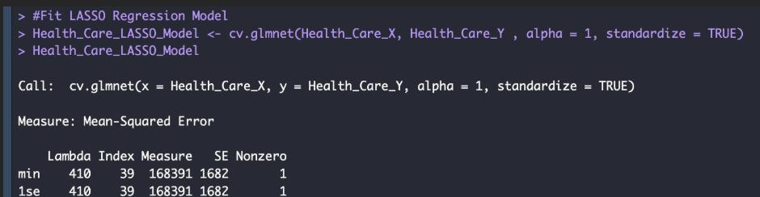
Lambda min is defined as the value of lambda that minimizes the cross validated Mean-Squared Error. The Lambda LSE is larger than the lambda value meaning that it is a simpler model with fewer non-zero coefficients with a standard error of minimum Mean-Squared Error (MSE). Lambda minimum and Lambda LSE are equal to 410 which means that the penalty strength minimizes the Mean Squared Error (MSE). This also makes the model scattered with only one non-zero predictor, and there were no other predictors considered as they have no impact on billing amount.
Non-Zero Coefficients
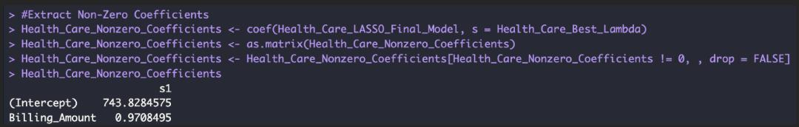
Above we are extracting non-zero coefficients from the LASSO Regression Model. This often produces models that are very scattered where many coefficients are shrunk to zero with very minimal predictors that are relevant. The intercept is 743.8284575 which represents the baseline prediction when all predictors are zero. The billing amount coefficient is 0.97 meaning that as billing amount increases, the predicted response will increase by 0.97. This shows that with an optimal lambda value the billing amount is a significant predictor while other variables are not included.
Summary Statistics
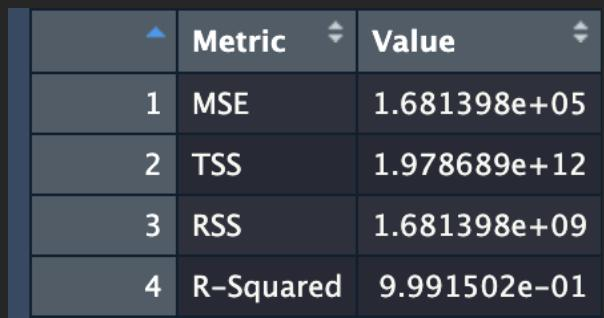
The Mean Squared Error (MSE) measures the average squared difference between actual and predicted billing amounts. The lower the value, the better the model’s performance. In this scenario it is equal to 168,140 which means that squared error between predicted and actual billing amounts is significant, but it depends on your data.
The Total Sum of Squares (TSS) shows the total variation of actual billing amounts meaning how spread out the values are from the mean. The value is 1.978 trillion and meaning there is high variability in billing amount across all patients. The larger the value, there is more variability in this dataset.
The Residual Sum of Squares (RSS) encapsulates the variation in actual billing amounts that is not explained by the model. The value is 1.681 billion which means that the amount of error in the model is failed to be explained. Normally a smaller Residual Sum of Squares (RSS) compared to Total Sum of Squares is better for a model.
The R-Squared value measures the variance in the actual billing amounts explained by the model. The value is 0.9992, which means that there is a 99.92% variance in billing amounds that is explained by the model. Overall, this means that this is an exceptionally good model fit but on the contrary a high R-Squared value can indicate overfitting which can be caused by many predictors or that the model is tested on training data instead of unseen data.
LASSO Coefficient
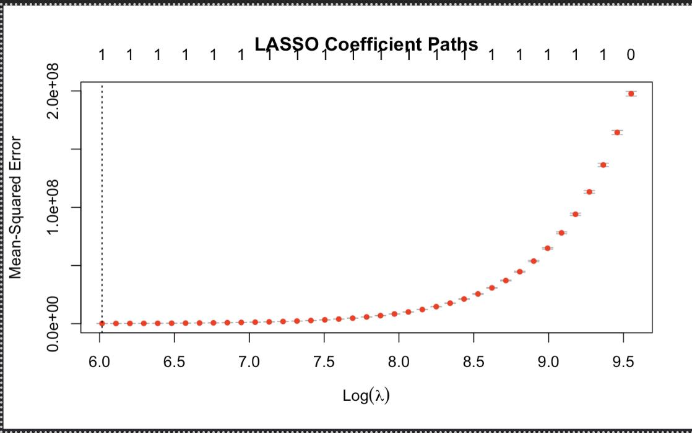
Based on the visualization above, the lower lambda values located on the left of the graph there are more predictors in the model making the bias lower and higher variance which can lead to overfitting. As the lambda increases, predictors become excluded making the model simpler, but this can lead to a higher Mean-Squared Error value. Lastly, an optimal lambda is used to help balance the simplicity of a model and prediction accuracy as you can see with the dotted vertical line.
Conclusion
Based on the LASSO Model above and the following interpretations, we can conclude that patient information is not affected by the billing amount. The remaining variables other than the intercept have shrunk to zero meaning that they there are not significant to the model at the lambda.min value. The intercept represents the value for the response variable when all predictors are set at zero. Specifically for the billing amount, for any unit increase, the response variables increase by 0.97 while all other variables are constant. After completing a LASSO Regression Model for this question, we can see that there is no correlation between patient information and billing amount.
Influence of Hospital Stay (Length of Stay and Medical Conditions) On Billing Amount
The purpose of this research question is to understand the influence of hospital stay based on length of stay and medical conditions and how it affects billing amount. We also want to see if hospitals with similar services charge different rates. To answer this research question, we will be using the LASSO Regression Model to handle multiple predictors and shrink irrelevant coefficients to zero, improving interpretability and generalization. The focus is tp group hospitals by average billing categories and examine how medical conditions and length of stay impact billing amount.
Process
To understand how hospital stays (length of stay and medical conditions) in hospital affect billing amounts, we started by preparing the data. Based on their average billing amounts, we group hospitals into four categories - low, medium, high, and extremely high). This grouping simplifies comparisons between hospitals with similar services. Also, it helps to categorize hospitals as there are many. Since LASSO Regression only works with numeric data, we converted categorical variables like medical conditions and hospital billing groups into dummy variables. From there we combined all numeric variables, such as length of stay and these dummy variables, into a predictor matrix (X) and used the billing amount as the response variable (y). Using cross-validation, we identified the optimal penalty term that minimizes prediction error while shrinking irrelevant predictors to zero. This approach allows us to focus on the most significant factors driving billing amounts and ensures that the model generalizes well to new data.
The analysis utilized the glmnet, dplyr, and base R libraries to prepare the data, fit the LASSO Regression model, and interpret the results. The glmnet package was central to modeling and fitting LASSO Regression, performing cross-validation to identify the optimal penalty term, and extracting significant coefficients, which streamlined feature selection and regularization. The dplyr library was employed for data manipulation, including selecting relevant columns, grouping hospitals based on average billing, and merging datasets. Base R functions, such as model.matrix, apply, and cbind, were used to convert categorical variables into numeric dummy variables and to combine predictors into a matrix suitable for regression. Together, these libraries enabled efficient data preprocessing, model building, and result interpretation, addressing the research question comprehensively.
Interpretations
Lambda Values
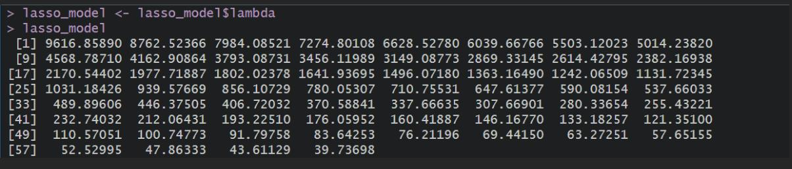
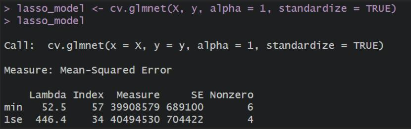
The range of lambda values, from 9616.85 to 52.53, shows how the model balances complexity and simplicity. Smaller lambda values keep more predictors in the model, allowing for more detailed analysis, while larger values simplify the model by shrinking less important predictors to zero. The optimal lambda of 52.53 was chosen because it resulted in the lowest Mean Squared Error (MSE) of approximately 39,908,579. This means the model is accurate and streamlined, focusing on the most important predictors without overfitting the data.
Coefficients of the Model
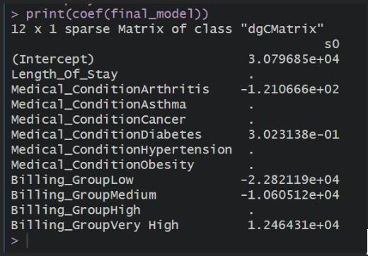
The coefficients from the final model provide valuable insights into the factors influencing billing amounts. The length of stay significantly impacts billing, with each additional day adding approximately 30,796.85 to the total charges. Among medical conditions, Arthritis has a minor negative effect (-121.07), while Diabetes shows a very slight positive influence (0.30), and other medical conditions were not statistically significant.
Non-Zero Coefficients
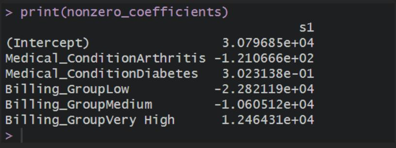
Non-Zero Coefficients Billing Group
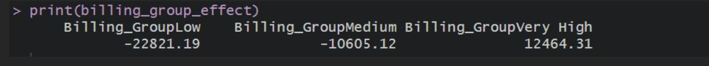
Hospital billing groups play a major role: hospitals in the “Low” billing group charge significantly less (-22,821.19), “Medium” billing group hospitals charge moderately less (-10,605.12), and hospitals in the “Very High” group charge significantly more (12,464.31). These findings suggest that while medical conditions have limited influence, the length of stay and hospital pricing tiers are the most important factors driving billing amounts.
MSE
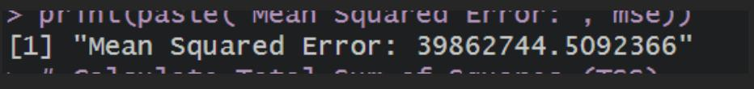
R-Squared

The Mean-Squared Error (MSE) of approximately 39,862,744 represents the average squared difference between the observed and predicted billing amounts. This metric indicates the model’s overall error, with smaller values signifying better accuracy. The R-Squared value of 0.7985 suggests that the model explains about 79.85% of the variability in hospital billing amounts, demonstrating a strong fit for the data. This indicates that the predictors, such as length of stay, billing group, and certain medical conditions, effectively capture the key drivers of billing variation.
LASSO Coefficients
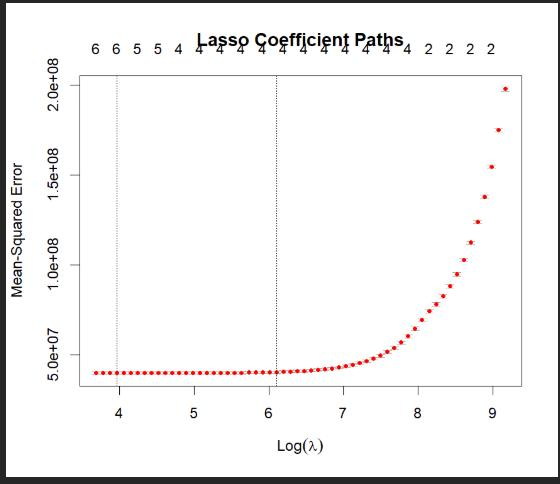
The Coefficient Path Plot visualizes how the Lasso regression model behaves as the penalty parameter λ\lambda changes. The X-axis (Log(λ)) represents the logarithmic scale of the penalty values, with larger values imposing stronger regularization, forcing less significant predictors toward zero. The Y-axis (MSE) shows the Mean Squared Error for each λ\lambda, with the red dots indicating the model’s error at different penalty levels. The left dashed line marks λmin\lambda_{min}, the value of λ\lambda where the MSE is minimized, meaning the model achieves the best balance between predictive accuracy and simplicity. The plot demonstrates that as λ\lambda increases, the less important predictors are gradually excluded from the model, leaving only the most influential ones at λmin\lambda_{min}. This ensures the model focuses on the variables that significantly impact billing while reducing overfitting and improving generalizability.
Conclusion
The analysis reveals that length of stay is a strong predictor of hospital billing amounts, with longer stays resulting in significantly higher costs. Among medical conditions, only a few, such as Arthritis and Diabetes, showed minor influence, indicating that billing is less sensitive to specific conditions. In contrast, hospital billing groups had a substantial impact, highlighting notable disparities in pricing across hospitals, with “Low” and “Medium” groups reducing costs and “Very High” groups increasing them. Overall, the study successfully addresses the research question by identifying the primary predictors of hospital billing and quantifying their effects, offering valuable insights into the factors driving cost variations.
Blood Types Related to Certain Medical Conditions
Our last research question is understanding if blood types are related to certain medical conditions. We will use the Chi-Squared test to answer this question. The libraries that will be used for this scenario are the glmnet and dplyr packages. Glmnet is used for regression modeling and dplyris used for data manipulation. We will load the dataset using the read.xlsx file.
After importing these packages and loading the dataset, we will create a contigency table. The purpose of contingency table is to summarize the different frequencies of blood type and medical condition. Using this information we will perform the Chi-Squared test to see if there is a relationship between blood type and medical condition. The results that we will expect have the Chi-Squared statistic, p-value, and degrees of freedom. The Chi-Squared statistic indicates how the observed data deviates from the expected data under the null hypothesis. The p-value shows if the relationship is significant and lastly, the degrees of freedom show the different independent comparisons in the test.
Interpretations
Null Hypothesis
The null hypothesis for the Chi-Square test states that the two categorical variables, Blood_Type and Medical_Condition, are independent.
P-Value
The p-value of 0.8784 is much greater than the common significance level of 0.05 which indicates that there is no evidence to reject the null hypothesis.
Conclusion
Based on the high p-value, we fail to reject the null hypothesis. This suggests that there is no statistically significant association between Blood_Type and Medical_Condition in the given dataset.
Advantages of LASSO Regression
- Feature Selection - shrinks coefficients to exactly zero making it a more interpretable model
- Reduces Overfitting - prevents overfitting since it is penalizing large coefficients
- Handles Multicollinearity - Multicollinearity is a high correlation between predictors and LASSO can handle it as it will only select one significant variable and shrink the others to zero
Disadvantages of LASSO Regression
- Bias in Estimates - since variables that have high coefficients shrink to zero it can introduce bias
- Exclusion of Relevant Variables - eliminating all coefficients that are not significant may not always be useful since it seems as if there is a weak association between the target variable it will be shrunk to zero
- Cannot Handle Non-Linear Relationships - It is assumed that the predictors and response variables have a linear relationship making it harder to interpret the non-linear relationships
Advantages of Chi-Squared Test
- Simple and Easy to Use - very straightforward and easy to compute specifically for small and medium datasets
- Handles Large Sample Sizes - Provides reliable results with large sample sizes
- Insightful for Categorical Data - Chi-Squared tests are good and useful when exploring relationships between categorical variables in contingency tables
Disadvantages of Chi-Squared Test
- Sensitive to Sample Size - For large samples, even small differences appear significant. For small samples, it might have the capability to detect significant relationships
- Cannot Handle Small Expected Frequencies - For this test to be complete there needs to be enough observations for each category meaning if there is a contingency table with low frequencies it can lead to unreliable results
- Overlooks Non-Linear Relationships - Chi-Squared test is not designed to interpret non-linear relationships or complex factors between variables
Reference:
[1] “data.world,” [Online]. Available: https://data.world/ninami/healthcare-dataset